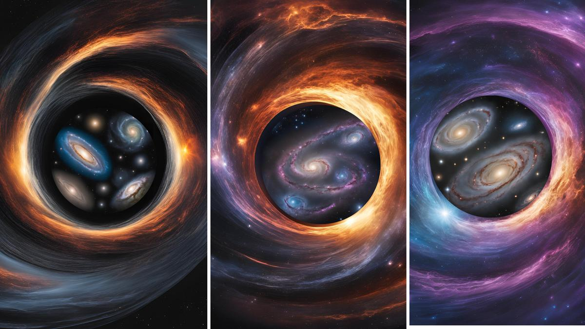

Missões espaciais
Uma missão espacial é um esforço planejado e estruturado para enviar veículos, instrumentos ou seres humanos ao espaço sideral com o objetivo de explorar o cosmos, realizar pesquisas científicas ou testar novas tecnologias.
Essas jornadas exigem anos de preparação, engenharia de alta precisão e a colaboração entre agências governamentais e empresas privadas.
Sputnik 1 (1957)

Lançado pela União Soviética em 4 de outubro de 1957, o Sputnik 1 foi o primeiro satélite artificial a orbitar a Terra. Trata-se de uma esfera metálica simples que emitia sinais de rádio ("bips") detectáveis em todo o mundo. Esse marco deu início oficial à Corrida Espacial entre a União Soviética e os Estados Unidos.
Vostok 1 (1961)

Em 12 de abril de 1961, a missão soviética Vostok 1 levou o cosmonauta Yuri Gagarin ao espaço, tornando-o o primeiro ser humano a completar uma órbita ao redor da Terra. Foi durante esse voo que Gagarin proferiu a famosa frase: "A Terra é azul".
Apollo 11 (1969)

A missão norte-americana da NASA realizou o maior feito da exploração espacial do século XX: levar os primeiros humanos à Lua. Em 20 de julho de 1969, Neil Armstrong e Buzz Aldrin caminharam no solo lunar, enquanto Michael Collins mantinha a nave em órbita.
Programa Voyager (1977)

Composto pelas sondas gêmeas Voyager 1 e Voyager 2, este programa da NASA foi enviado para estudar os planetas exteriores do Sistema Solar (Júpiter, Saturno, Urano e Netuno). Hoje, ambas estão no espaço interestelar, além da influência do Sol, carregando o Golden Record (disco com sons e dados da Terra).
Telescópio Espacial Hubble (1990)

Posicionado na órbita baixa da Terra, o Hubble revolucionou a astronomia ao capturar imagens ultra nítidas do universo sem a interferência da atmosfera terrestre. Ele ajudou a determinar a taxa de expansão do universo e a descobrir milhares de galáxias distantes.
Estação Espacial Internacional - ISS (1998)

O maior laboratório espacial já construído, fruto da cooperação entre agências dos Estados Unidos, Rússia, Europa, Japão e Canadá. O primeiro módulo foi lançado em 1998 e, desde 2000, a estação é habitada continuamente por astronautas que realizam pesquisas científicas em microgravidade.
Missão Cassini-Huygens (1997–2017)

Uma colaboração entre a NASA e a Agência Espacial Europeia (ESA) para explorar Saturno. A sonda Cassini orbitou o planeta dos anéis por anos, enquanto o módulo Huygens pousou em Titã, a maior lua de Saturno, revelando mares de metano líquido e dados valiosos.
Curiosity e o Programa de Rovers em Marte (2012–Presente)

O robô Curiosity pousou na cratera Gale, em Marte, em 2012, com o objetivo de procurar evidências de ambientes que pudessem ter abrigado vida microbiana no passado. A missão continua ativa e pavimentou o caminho para novas explorações e rovers no planeta vermelho.
Nova Horizons (2006)

A missão New Horizons foi projetada para explorar os confins do Sistema Solar. Em 2015, a sonda fez um histórico sobrevoo de proximidade por Plutão, revelando imagens inéditas de suas montanhas de gelo, planícies e da famosa região em formato de coração.
Telescópio Espacial James Webb - JWST (2021)

Lançado em dezembro de 2021, o James Webb é o sucessor do Hubble e o telescópio espacial mais potente já construído. Ele opera na faixa do infravermelho, permitindo observar as primeiras galáxias formadas após o Big Bang e analisar a atmosfera de exoplanetas em busca de sinais de habitabilidade.